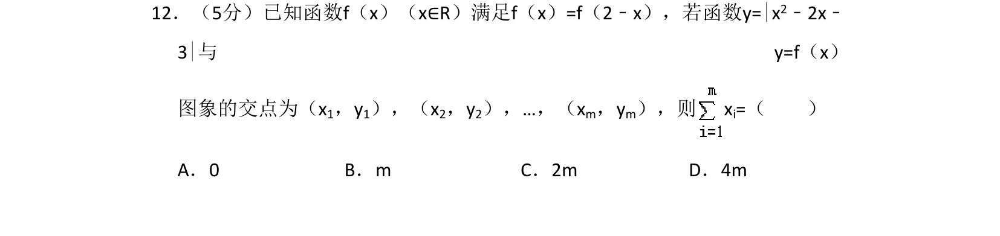
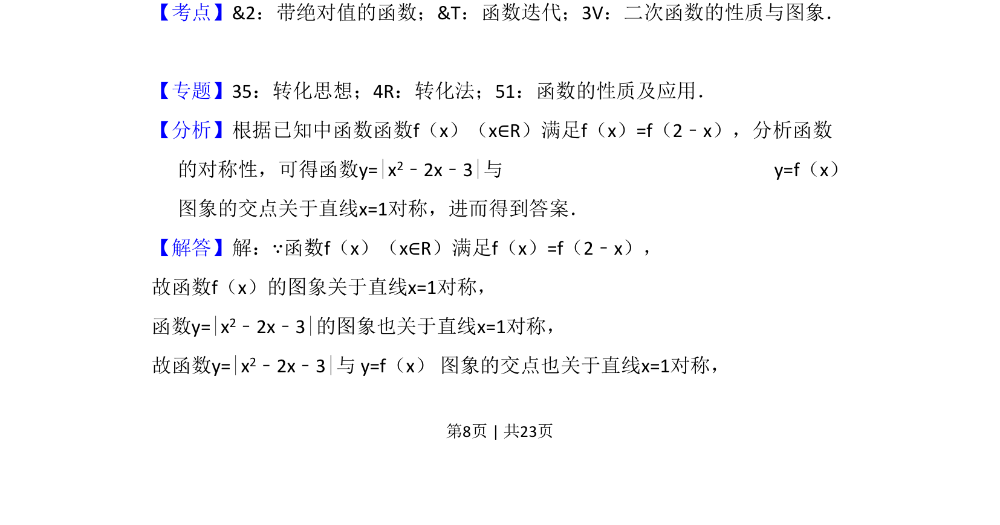
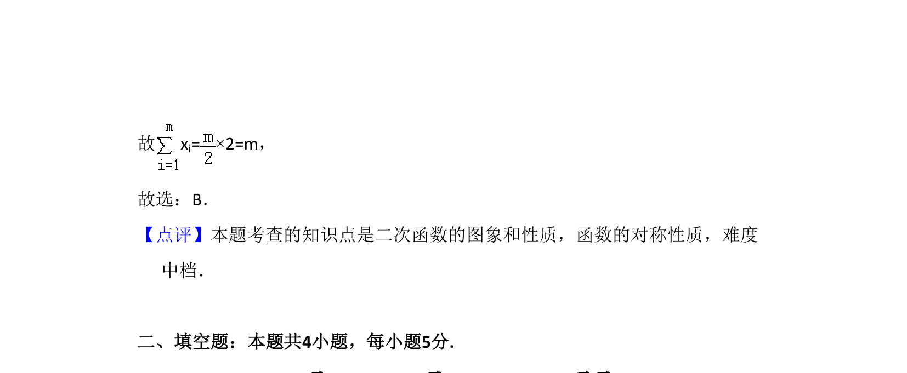

考点：函数对称性 绝对值函数 二次函数图象 数形结合

函数 f(x) 关于直线 x=1 对称，与给定二次函数绝对值图像的交点横坐标之和为 m。


📄 原 PDF 第 8 页：
素材/真题/吉林/2008-2024·（吉林）数学高考真题/2016年高考数学试卷（文）（新课标Ⅱ）（解析卷）.pdf
12．（5分）已知函数f（x）（x∈R）满足f（x）=f（2﹣x），若函数y=|x2﹣2x﹣ 3|与 y=f（x） 图象的交点为（x1，y1），（x2，y2），…，（xm，ym），则x i=（ ） A．0 B．m C．2m D．4m
【考点】&2：带绝对值的函数；&T：函数迭代；3V：二次函数的性质与图象．菁优网版 权所有 【专题】35：转化思想；4R：转化法；51：函数的性质及应用． 【分析】根据已知中函数函数f（x）（x∈R）满足f（x）=f（2﹣x），分析函数 的对称性，可得函数y=|x2﹣2x﹣3|与 y=f（x） 图象的交点关于直线x=1对称，进而得到答案． 【解答】解：∵函数f（x）（x∈R）满足f（x）=f（2﹣x）， 故函数f（x）的图象关于直线x=1对称， 函数y=|x2﹣2x﹣3|的图象也关于直线x=1对称， 故函数y=|x2﹣2x﹣3|与 y=f（x） 图象的交点也关于直线x=1对称，